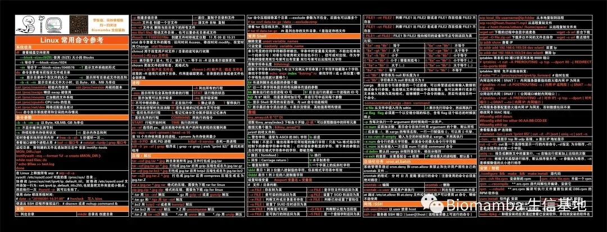
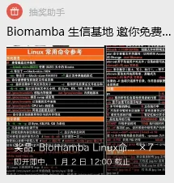

送一波超大的Biomamba鼠标垫
原文：https://mp.weixin.qq.com/s?__biz=MzAwMzIzOTk5OQ==&mid=2247506758&idx=1&sn=08f97d90fa766cd0811cfcdd30b7a114&chksm=9b3ca216ac4b2b00c4d79216087858d51fff10ef907ef7cb2ef092ebfe86c041093208fe9411#rd 合集：送周边

超大鼠标垫周边


给大家送点小礼物，让2023年收个尾，我们的Linux课程(十小时学会Linux)已经更完啦，不知道大家掌握的怎么样呢。考虑到可能有些小伙伴跟我一样记不住命令，给大家做了十个 超大(80cm X 30cm)的Linux命令鼠标垫。参与方式很简单，转发此条推送至朋友圈，30赞，发给客服微信[Biomamba_yunying] 领取抽奖小程序码，前3名人手一个，其余7名随机抽取。
赠品预览：

1月2号12:00前 停止发放抽奖码并准时开奖：


资料95折
2023合辑中目前28篇付费资料(2023年订阅须知)，联系文末微信可以以119￥基础上95折获取全部资料。当然，付费不是目的，以下资料都可以通过转发领取(更推荐这种方式)。
2022资料合辑(重置链接) scRNA-Seq学习手册2023_R语言版一文搞定拟时序分析的下游可视化探索 Seurat中如何让细胞听你指挥 《拟时序分析》3.monocle2实操：完整版 一文搞定单细胞基因集评分 改造单细胞降维图| 2.ggplot2中的DIY 改造单细胞降维图| 3.3D降维图与动图绘制 一文搞定单细胞/空间转录组的WGCNA分析 SCENIC单细胞转录因子预测|2.学习手册生信Python速查手册 单细胞复写|3.急性心肌梗塞(AMI)外周血scRNA-Seq分析实战 SCENIC单细胞转录因子预测|4.精简版流程 《细胞通讯》2.CellChat基础分析教程 《细胞通讯》2.2CellChat多组别分析 《细胞通讯》CellChat学习手册 《拟时序分析》3.monocle2实操：完整版 ComplexHeatmap学习手册沉浸式统计细胞比例VlnPlot的ggplot改造 scRNA-Seq学习手册Python版 空间转录组学习手册合辑 Seurat空间转录组学习手册 Scanpy空间转录组学习手册 Stereopy空间转录组学习手册Squidpy空间转录组学习手册 影像组学学习手册R语言基础学习手册
服务器也95折~
生信分析难免要上服务器，我们也一直致力于给大家提供高效 、经济 的算力，以下产品——共享的、独享的、实体的服务器，都是95折 哦~
了解详情可点击超链接：
以上活动均在1月2号12:00截止

如何联系我们

 公众号后台消息回复不便，这里给大家留一下领取资料及免费服务器(足够支持你完成硕博生涯的生信环境)的微信号 ，方便各位随时交流、提建议（科研任务繁重，回复不及时请见谅）。此外呼声一直很高的交流群 也建好了，欢迎大家入群讨论：
公众号后台消息回复不便，这里给大家留一下领取资料及免费服务器(足够支持你完成硕博生涯的生信环境)的微信号 ，方便各位随时交流、提建议（科研任务繁重，回复不及时请见谅）。此外呼声一直很高的交流群 也建好了，欢迎大家入群讨论：
大家可以阅读完这几篇之后添加给生信入门初学者的小贴士 如何搜索公众号过往发布内容

 您点的每个赞和在看，我都认真当成了喜欢
您点的每个赞和在看，我都认真当成了喜欢